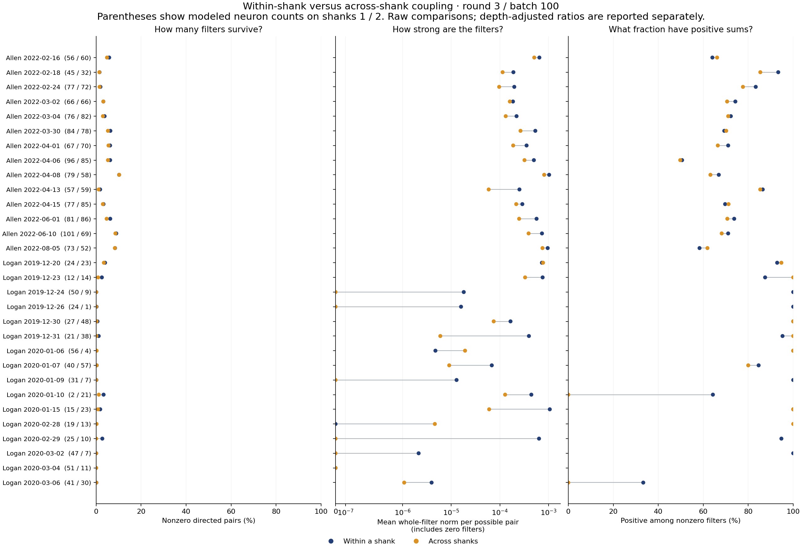
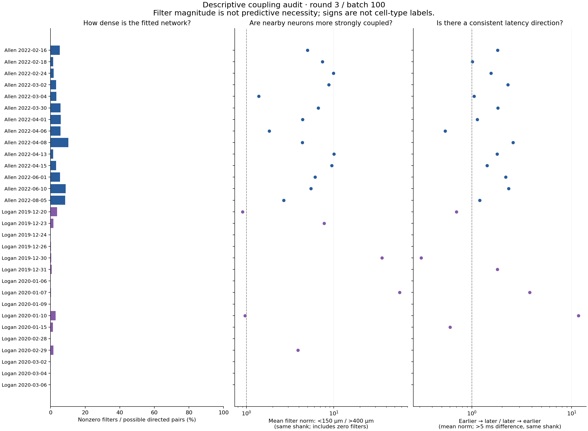

← Directed depth–latency plots · Download shank statistics · Shank figure PDF
Loading the fitted connectivity summary…
Loading checkpoint information…
This is a coupling-specific group penalty. Each group is one directed neuron pair’s entire 32-lag filter. A separate gradient step is followed by whole-filter shrinkage; filters below the shrinkage threshold become exactly zero. Readout regularization is separate.
Sparsity-search procedure for this fit: double the whole-filter coupling penalty for each session and refit its coupling filters. Keep the change only if it removes connections and preserves the measured prediction score on both development-trial groups. Otherwise restore that session’s previous filters and penalty. State and gaze are re-inferred from visible spikes when scoring. These development scores select the penalty; they are not a final independent test.
Each row below is one session. Dark blue = within a shank; gold = across shanks. The line simply joins that session’s two measurements. Neuron counts on shanks 1 / 2 appear beside the session name.
Density is the number of nonzero filters divided by the number of possible directed pairs. Strength is the average full-filter norm per possible pair, including zero filters. This avoids giving a category more weight just because it has more neurons.

| Source → target | Nonzero / possible | Density | Positive sums | Mean filter norm |
|---|
“Positive sums” is the fraction of nonzero filters whose time-domain sum is positive. Shank 1/2 correspond to metadata shank IDs 0/1. Assignments come from each neuron’s waveform peak and the probe’s shank metadata. Both shanks are represented in all 30 sessions, although a few sessions have very few modeled neurons on one shank.
These are positive and negative predictive effects, not identified excitatory and inhibitory cell types. No constraint in this model gives each neuron a single outgoing sign.

The six orthonormal basis coefficients are reconstructed into the actual 32-lag temporal filter. Its L2 norm measures whole-filter magnitude without cancellation; its sum determines positive versus negative sign. The original network visualization still uses the absolute signed sum for opacity as requested.
Locality compares mean norm at depth separations below 150 µm versus above 400 µm, within a shank. Latency direction compares earlier-responding source → later-responding target with the reverse, using stimulus latency differences greater than 5 ms. These latencies are response-peak latencies, not coupling transmission delays. All possible pairs, including zero filters, enter the means.
For the depth-adjusted shank comparison, each session’s within/across means are weighted to the same distribution across depth-separation bins: 0–100, 100–200, 200–400, 400–600, and ≥600 µm. Only bins with at least 10 pairs in each category contribute. This controls coarse vertical distance, not receptive-field similarity, firing rate, cell quality, shared input, or horizontal distance. Ratios are summarized by their median across sessions; neurons and edges are not treated as independent biological replicates.
These are exploratory summaries of an early checkpoint. Repeat them after convergence and regularization selection before interpreting circuit organization.
Full numerical results and checkpoint